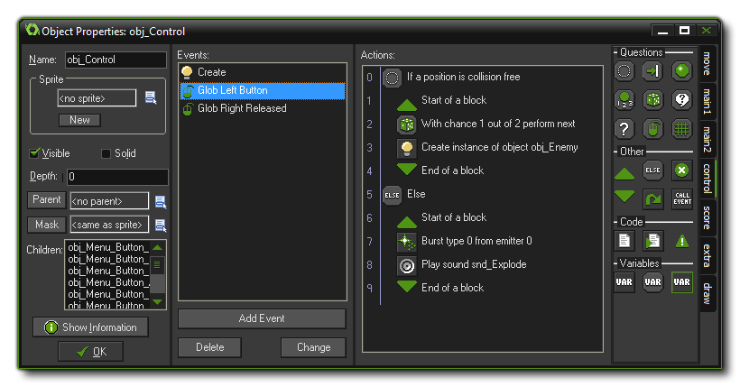
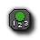
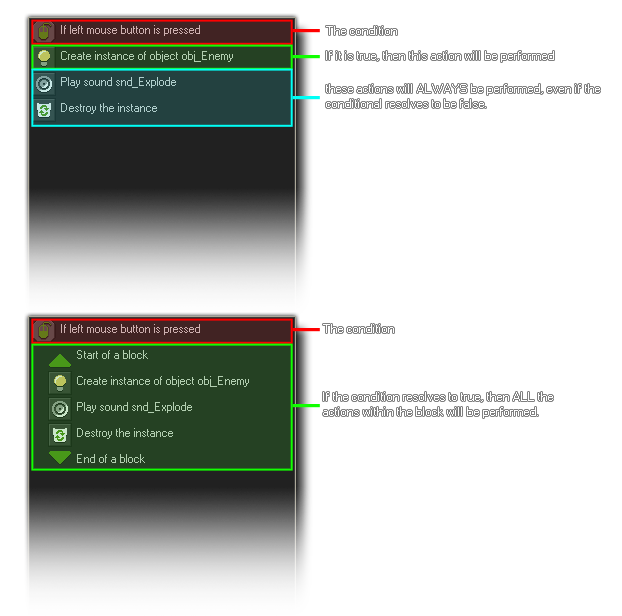
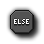
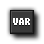
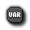
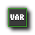

Control Actions
The control actions are actions which ask
questions, add code or check conditions.
The third tab in your object properties action list is the
"control" tab. This tab has all the main actions that are needed to
control the more complex workings of your game like asking
questions, checking conditions or adding GML code. These actions
are generally used in groups as outlined in the following image:
 In
the above example, the actions check to see if a position is
collision free and if it returns true (there is no collision) then
a "code block" is opened and in that we have another two actions.
These two actions work together, with the first one generating a
random 1 in 2 chance of running the second action, which will
create an instance of "obj_Enemy" and then the code block is
closed. However, should the very first action that checks for a
collision return false (there is a collision), then the
second code block is started after the "else", and this block
bursts some particles and plays a sound. Note that the code blocks
are indented as this gives a better overview of the actions, in
particular when you use blocks inside blocks for more and more
complex programs.
Questions
The following actions are dealing with conditional checks
(ie: questions) which are normally to see if something exists, or
if there is a collision, or if two values are the same as each
other (or greater, or less). For all conditionals there is a check
box labeled NOT. If you check this, the result of the
question is reversed so that if the result was true it becomes
false and if it was false, it becomes true. If you look at the
action "Check Empty", you can have it without checking the "NOT"
box, which means it is asking "if the place that I put the instance
is empty", but if you have "NOT" checked then you are asking "if
the place that I put the instance is not empty". This allows
you to perform certain actions when a question is not true, or not
equal to or even not greater or not less than!
Another thing to watch when dealing with these conditionals is that
you can indicate whether they should apply to all instances of a
particular object or not. If you choose to apply them to all
instances of an object, the result will be true (or whatever)
only if it is the same for all instances of that object. For
example, you can check all instances of an object to see if the
position slightly to the right is collision free.
Check
Empty
This question returns true if the current instance, placed at the
indicated position does not generate a collision with an object.
You can specify the position as either absolute or relative and you
can also indicate whether only those instances flagged as solid
should be taken into account or all instances. This action is
typically used to check whether the instance can move to a
particular position.
Note: This action requires that the instance doing the check
has a mask index or a sprite with a valid collision mask assigned
to it.
Check
Collision
This is the opposite of the previous action. It returns true if
there is a collision when the current instance is placed at
the given position and, again, you can choose to check for only
those instances flagged as being solid or all instances.
Note: This action requires that the instance doing the check
has a mask index or a sprite with a valid collision mask assigned
to it.
Check
Object
This question returns true if the instance placed at the indicate
position meets an instance of the indicated object. These
collisions will be precise if both instances have the mask
index or sprite mask defined as being precise otherwise they will
be based on whether their bounding box overlaps or not.
Note: This action requires that both the instance doing the
check and the instance being checked has a mask index or a sprite
with a valid collision mask assigned to it.
Test Instance
Count
For his action you specify an object and a number. If the current
number of instances of the object is equal to the number the
question returns true, otherwise it returns false. You can also
change the check to test whether the number of instances is greater
than or less than the value you input. This type of check is
typically used to check whether all instances of a particular type
are gone, and so influence things like score, health or the game
state.
Test
Chance
This action takes the result of a "one in X" chance, where "X" is
the number you input to test. For example, if you set the number to
20, then it's as if you have rolled a 20 sided dice and only if the
side numbered 1 comes up will you get a "true" result, and the
action will perform the next one below it. The larger the number of
"sides" of the dice, the smaller the chance of 1 being true and the
next action being carried out, and the number being checked doesn't
actually have to be an integer as you could check for a 1 in 2.5
chance, or a 1 in 35.75 chance etc... However, fractions of 1 will
not work as you can't have a 1 in 0.5 chance of something
happening! This has many, many uses when making games as it can add
a controlled, yet random chance of something happening, for example
in each step you could have a bomb check to see if it should
explode, or an enemy check to see if it should change
direction.
Check
Question
Here you can specify a question for the player to answer either yes
or no to, with the subsequent actions running (or block of actions)
if the result is yes (true). The question is shown in an
independent pop-up dialogue.
 Test
Expression
Test
Expression
This is the most general question action whereby you can enter an
arbitrary expression and evaluate it. If the expression evaluates
to true (that is, a number larger or equal to 0.5) then the next
action (or block of actions) is performed. For more information on
expressions see this section of the manual - Using Expressions
and Variables in Actions.
Check
Mouse
This action will return true if the indicated mouse button is
pressed. For example, in the step event of an object you can check
whether a mouse button is pressed and, if so, move the instance to
that position (you would use the jump to a point action with values
mouse_x and mouse_y).
Check
Grid
Returns true if the position of the instance lies on an imaginary
grid, made up of spaces defined by you in action when you add
values to the vertical and horizontal spacing parameters. A common
use for this action is to do a check and only let the player move
if his character is aligned to the grid (think how a game like
PacMan works).
Other
Start
Block
This indicates the start of a block of actions. Using the start and
end block markers you are able to group a series of actions
together so that if a conditional results as true, then all the
actions are performed and not just the one directly below the
question. the following image illustrates this:  End Block
Indicates the end of a block of actions. See the above image and
"Start Block" action for more information.
Else
When you ask a question you may often wish to have a reply for if
the answer is true or false, and so GameMaker: Studio
provides you with the "else" action so you can re-create this with
actions. Basically, you have your conditional, then the block of
actions if it is true, then "else", then the block of actions for
if it is false. See the image at the top of the page for an example
of how this looks.
Repeat
Another useful action is the "Repeat" action. With this action, all
you do is specify the number of times you wish the next action (or
block of actions) to repeat and it will be done without you having
to copy and paste the actions yourself many times over. This can be
used for many things, for example spawning number of pickup
objects, or adding a value many times onto another or any manner of
things.
Exit Event
When this action is encountered no further actions in this
event are executed.
Call Parent
Event
This action is only useful when the object has a parent object as
it calls the corresponding event in the parent object. When working
with parents, any event that the parent object shares with the
child object is over-ridden by the child, so you can call this
action to force the child object to run the parent objects event
as well as any actions it has for the event.
Code
If you want more control over what is happening in the game you
can use code as GameMaker: Studio has its own language
called GML (The GameMaker Language). This can give far more
flexibility than using the standard DnD actions as it covers far
more things , but code and actions are not mutually exclusive and
can be mixed in events to get the behaviours you require.
 Execute
Code
Execute
Code
When you add this action, a window will open showing the GM Script
Editor where you can write the code that you wish the event to
execute. This code can be for anything from a single simple
function to a full blown AI, however it is recommended that you use
scripts (see Advanced Use:
Scripts) for longer pieces of code as it makes structuring your
game far easier.
Execute
Script
With this action you can execute a script that you have previously
added to the game resources, passing a maximum of five arguments to
it. For more information on scripts you can go to this section of
the manual - Advanced Use:
Scripts.
Comment
Use this action to add a line of comment to the action list. A
comment is usually a short sentence to remind you of what a
particular set of actions is meant to do and a comment in itself
does not actually affect the normal running of GameMaker:
Studio. However, even though it does nothing, it is still
recognised as an action and can be (for example) placed in a
collision event so that it will trigger that collision even when no
code is present.
Variables
Variables are an essential part of game making. They are the
base on which almost all a game is built as you need them to hold
the values that govern the behaviour of your objects, for example,
score, lives and health are all internal variables that
GameMaker: Studio creates for you (see
Variables And Variable Scope). However, in-built variables are
certainly not enough to build your game around, and so you will
need to use the following actions (or code) to set, test and change
variables as your game progresses.
Set
Variable
This action sets a variable to a value. If that variable does not
exists then it creates it and gives it the specified value. This
action can also change the many in-built variables that
GameMaker: Studio has. To use it you specify the name of the
variable and the new value it should have. Bear in mind that when
you check the Relative box, the value is added to the
current value of the variable, but please note that this can only
be done if the variable has already been created and has had a
value assigned to it!
Test
Variable
With this action you can check what the value of a particular
variable is. If the value of the variable is equal to the number
you have provided then the question returns true, otherwise it
returns false. You can also indicate that the check should be
whether the value is smaller than or greater than the value
specified and you can even use this action also to compare two
expressions or variables to see if they are the same as, greater
than or equal to each other.
 Draw
Variable
With this action you can draw the value of a variable at a
particular position on the screen. Note that this can only be used
in the draw event of an object.
© Copyright YoYo Games Ltd. 2018 All Rights Reserved